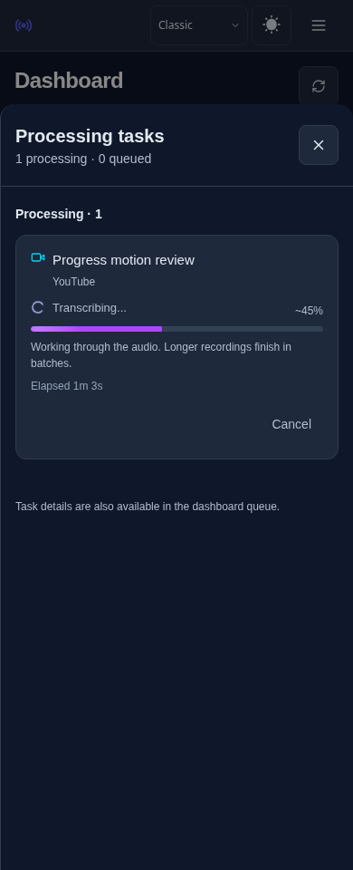
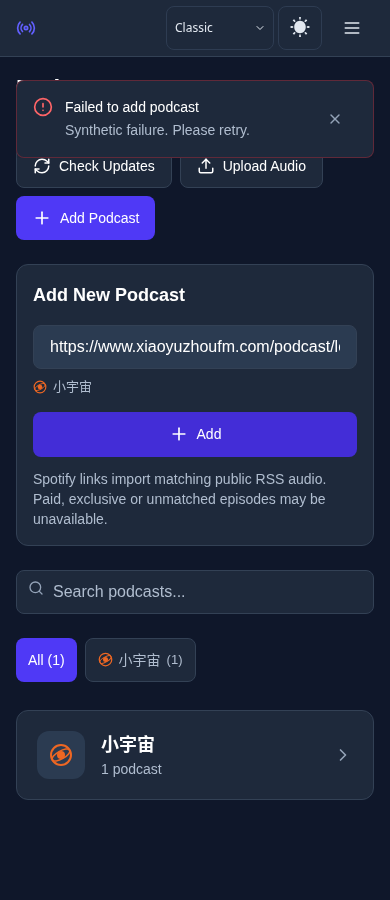

Root cause reproduced in tests: started_at=0 from an HTTP process erased the worker start time. A later event restored the start time and was mistaken for a restart, accepting a lower percentage. Stale video snapshots also overwrote start-time metadata despite retaining the newer progress.
Fix: preserve valid start metadata within an active attempt, reject stale start metadata, and treat learning a previously missing start time as the same attempt. Explicit queueing and a genuinely newer known start still reset progress. Podcast and video snapshots share the rule. Interpolation continues to follow reported work; no fabricated progress.
Repeated identical active error toasts now share one notification and renew its expiry. Distinct errors, independent loading operations, manual dismiss and account isolation retain their behavior.
Before: four new regression assertions failed. After: all 508 frontend tests passed; the subsequently added podcast regression passed separately (6 tests). Production build passed: 197.3 KiB initial compressed assets; bounded budget increased by 0.25 KiB to 197.5 KiB for the new shared guards.
Chromium: Classic dark / Editorial light, 390/820/1440px, ordinary/reduced motion. Reproduced 19 → 45 → incoming 19; visible percentage, bar and accessible value remain 45. Real retry resets to 19. Existing interpolation, offline animation and layout checks pass. Subscription/upload forms: all four appearances, three widths; two failed requests produce one matching error notification.
These are local production builds with controlled synthetic API data, not production browser acceptance. Production host remains disallowed by the environment network policy. No real content was reprocessed.

